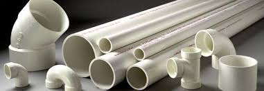

About the PVC Manufacturer
Polyvinyl Chloride (PVC) is one of the most commonly used thermoplastic polymers in the world (next to only a few more widely used plastics like PET and PP). It is a naturally white and very brittle (prior to the additions of plasticizers) plastic. PVC has been around longer than most plastics having been first synthesized in 1872 and commercially produced by B.F. Goodrich Company in the 1920s. By comparison, many other common plastics were first synthesized and became commercially viable only in the the 1940s and 1950s. It is used most commonly in the construction industry but is also used for signs, healthcare applications, and as a fiber for clothing.
PVC is produced in two general forms, first as a rigid or unplasticized polymer (RPVC or uPVC), and second as a flexible plastic. Flexible, plasticized or regular PVC is softer and more amenable to bending than uPVC due to the addition of plasticizers like phthalates (e.g. diisononyl phthalate or DINP). Flexible PVC is commonly used in construction as insulation on electrical wires or in flooring for homes, hospitals, schools, and other areas where a sterile environment is a priority, and in some cases as a replacement for rubber. Rigid PVC is also used in construction as pipe for plumbing and for siding which is commonly referred to by the term “vinyl” in the United States. PVC pipe is often referred to by its “schedule” (e.g. Schedule 40 or Schedule 80). Major differences between the schedules include things like wall thickness, pressure rating, and color.
